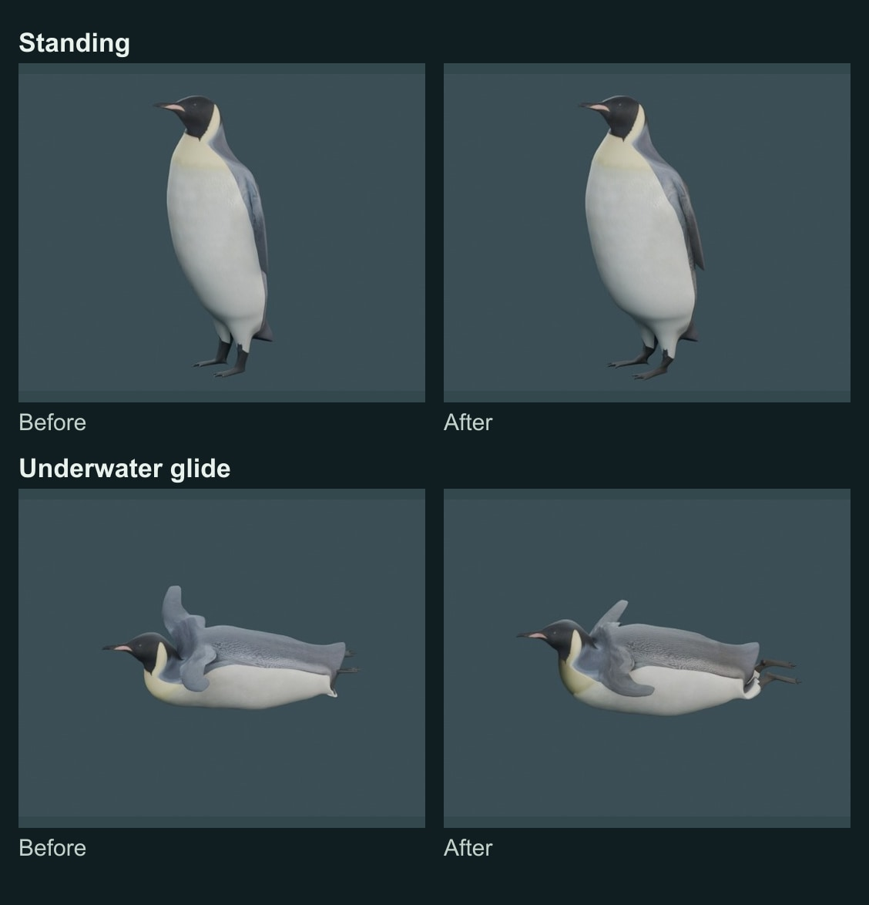
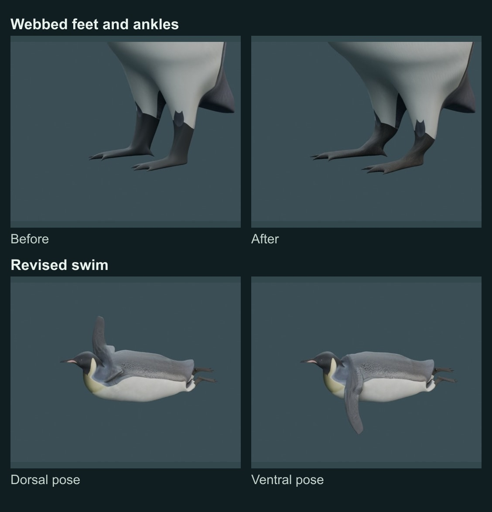

Emperor penguin
Aptenodytes forsteri · Exterior and locomotion revision 0.7.23
Open the 3D specimenBefore and after


Biological evidence
- Standing. Both webbed feet are level. The standing study shows short exposed ankles under the feathers and a fuller chest and abdomen. The revised proportions were judged against adult reference photographs. Australian Antarctic Program.
- Swimming. Both flippers move through dorsal and ventral phases. The active cadence uses the reported dominant 1.35 Hz for seven free-ranging emperor penguins. The pose and the eight-second sequence are authored. Use the phase controls to pause on the stroke or advance to the glide. Sato et al., Table 1.
- Gliding. Underwater film documents unpowered glides and some variation in flipper sweep. This example shows a shallow sweep and rearward feet, with a short authored deceleration. Foot use for steering is outside the straight-glide example. Clark and Bemis, 1979, pp. 420–421.
The reconstruction uses normalized display units. Joint angles, anatomical dimensions, travel speed, and forces have no independent validation.
Surface and provenance
The revision reshapes the torso, ankles and webbed feet, reworks the underwater posture, and adds fine plumage relief and scute texture. The two original embedded color images and their UVs are preserved. Marcel Porsiel’s Emperor penguin is the source. The derivative remains under CC BY-NC 4.0.
Evidence record and GLB checksum · Mesh and surface authoring script · Download the revised rig